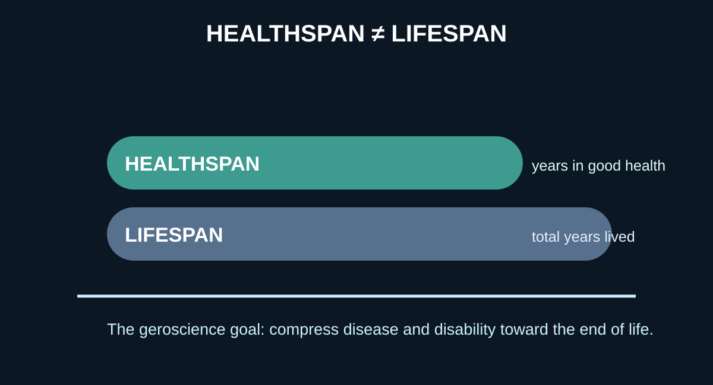
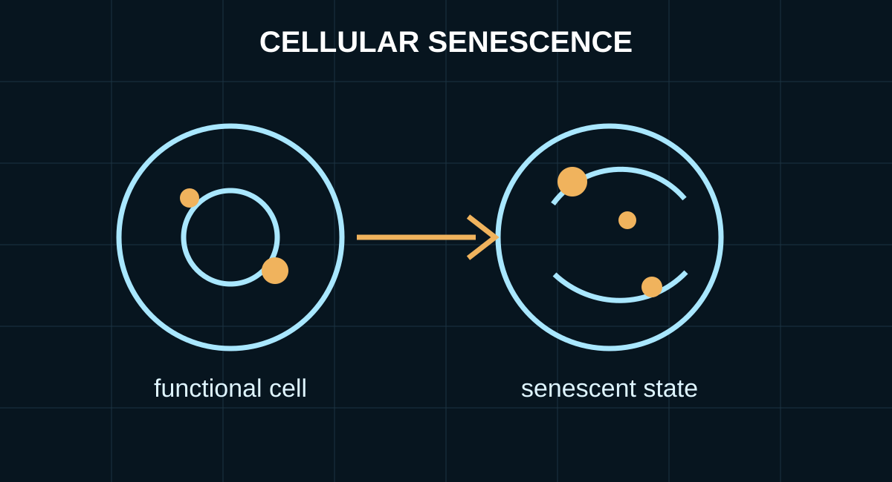

AGING • HEALTHSPAN • GEROSCIENCE
Longevity & Geroscience
Can we change how humans age—not merely adding years to life, but preserving health, function and independence for more of those years?
ADDED OCTOBER 7, 2026

The real goal: healthspan, not immortality
Longevity research is often marketed as a quest to live forever. Serious geroscience asks a more useful question: can the biological processes that make aging the largest risk factor for many chronic diseases be understood well enough to delay disease and functional decline? The National Institute on Aging describes the goal as extending healthspan—the portion of life spent in good health—rather than simply increasing lifespan.
MKP evidence rule
Animal lifespan is not human lifespan. A treatment that extends life in worms or mice is scientifically interesting, but it is not proof that it will make people live longer. Biomarker changes are not the same as fewer heart attacks, less dementia or longer survival. This section will keep those levels of evidence separate.
Aging is biology, not one clock
Aging emerges from interacting molecular, cellular and systemic changes. Researchers organize many of these processes into frameworks often called the hallmarks of aging. They include genomic instability, telomere attrition, epigenetic alterations, loss of protein quality control, altered nutrient sensing, mitochondrial dysfunction, cellular senescence, stem-cell exhaustion, altered communication between cells and other interconnected processes. The framework is a map for research, not a checklist proving that any one supplement or drug reverses aging.

Cellular senescence: when damaged cells linger
Senescent cells have stopped dividing but can remain metabolically active and influence surrounding tissue. Their biology is complicated: senescence can be useful in processes such as wound healing and tumor suppression, while accumulation of some senescent cells with age may contribute to inflammation and tissue dysfunction. Drugs intended to selectively remove harmful senescent cells are called senolytics. Results in animals have been intriguing, and early human trials are underway for aging-related conditions, but broad human anti-aging benefits have not been established.
Epigenetics and biological-age clocks
Patterns of chemical regulation around DNA change with age and can be used to construct statistical estimates of biological aging. These epigenetic clocks are powerful research tools, but changing a clock score does not automatically mean a person has become younger in a clinically meaningful sense. A useful longevity intervention ultimately has to improve outcomes that matter: disease, function, disability, quality of life or survival.
Calorie restriction: unusually strong human evidence, with limits
Calorie restriction extends healthy lifespan in multiple laboratory species. In the randomized CALERIE human trial, adults without obesity were assigned to a calorie-restriction intervention or an unrestricted control diet for two years. A later analysis found a small slowing in one DNA-methylation measure of the pace of aging, while several other biological-age measures did not change significantly. Follow-up research continues to find metabolic effects. The trial is important evidence that aspects of human aging biology may be modifiable, but it did not prove that calorie restriction extends human lifespan.
Rapamycin and nutrient sensing
Rapamycin is one of the most important experimental drugs in aging research because manipulating the mTOR nutrient-sensing pathway can extend lifespan in several model organisms. That does not make routine rapamycin use an established longevity treatment for healthy people. Human studies are investigating effects on aging-related biology and immune function, while dose, timing, long-term risks and meaningful clinical outcomes remain active questions.
Senolytics, stem cells and reprogramming
Three especially ambitious research directions aim at different layers of aging. Senolytics try to remove selected dysfunctional cells. Stem-cell research asks whether declining tissue repair can be restored. Partial cellular reprogramming attempts to reset aspects of cellular state without erasing cell identity. Each has serious scientific rationale and significant unanswered safety and translation questions. Claims that these approaches already amount to proven human rejuvenation go beyond the evidence.
What already improves the odds of a longer healthy life?
The frontier is exciting, but it should not distract from interventions with strong human evidence. Avoiding tobacco, regular physical activity, adequate sleep, vaccination, maintaining healthy blood pressure and lipids, treating diabetes when present, good nutrition and appropriate preventive medical care already reduce disease and premature mortality. Future geroscience may add to that foundation; it does not replace it.
The questions MKP will follow
This will be a living section. MKP will follow biological-age measurement, senescence and senolytics, nutrient-sensing pathways such as mTOR, regenerative medicine, epigenetic and partial reprogramming, immune aging, mitochondrial biology, clinical trials and the economics and ethics of radical life extension. The standard will remain the same: distinguish mechanisms from biomarkers, biomarkers from clinical outcomes, and compelling hypotheses from demonstrated human benefit.
Sources & further reading
NIH/National Institute on Aging — Geroscience Interest Group →
National Institute on Aging — Cellular senescence and healthier aging →
Nature Aging — CALERIE and DNA-methylation measures of biological aging →